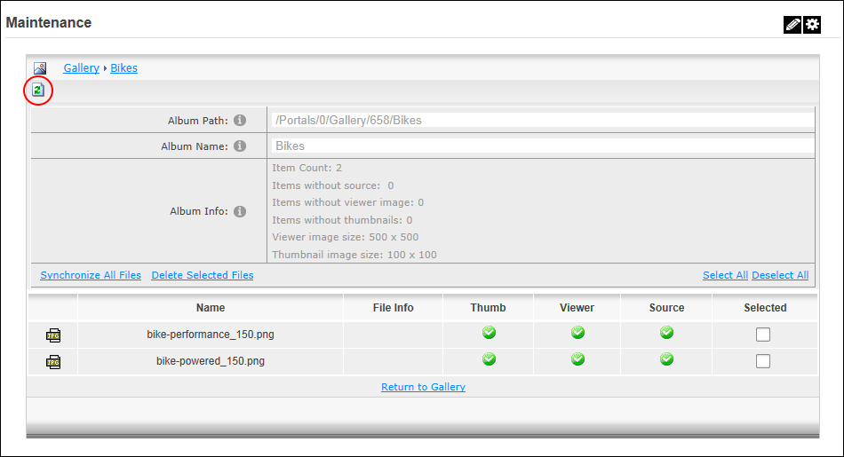

Module Editors can clear cached files from an album of the Gallery module. This synchronizes the gallery and updates any album or file changes which have been made outside of the normal gallery user interface, or if the physical location of the gallery is changed.
Option One:


Clearing the cache
Option Two: